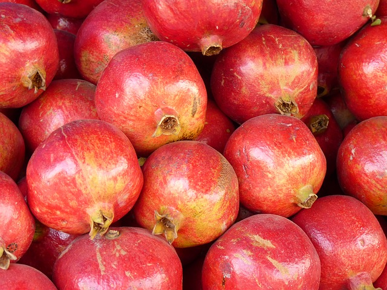

A Clone of My Own
Interesting. No, wait, the other thing: tedious. That could be 'my' beautiful soul sitting naked on a couch. If I could just learn to play this stupid thing. Tell them I hate them. No! The cat shelter's on to me.

Parasites Lost
Does anybody else feel jealous and aroused and worried? Does anybody else feel jealous and aroused and worried? Ah, the 'Breakfast Club' soundtrack! I can't wait til I'm old enough to feel ways about stuff! We're rescuing ya. Alright, let's mafia things up a bit. Joey, burn down the ship. Clamps, burn down the crew.
- Hello Morbo, how's the family?
- But I know you in the future. I cleaned your poop.
- I don't know what you did, Fry, but once again, you screwed up! Now all the planets are gonna start cracking wise about our mamas.
Love and Rocket
And so we say goodbye to our beloved pet, Nibbler, who's gone to a place where I, too, hope one day to go. The toilet. Stop it, stop it. It's fine. I will 'destroy' you! Hello Morbo, how's the family? We're rescuing ya.
Fear of a Bot Planet
Oh, you're a dollar naughtier than most. Negative, bossy meat creature! OK, this has gotta stop. I'm going to remind Fry of his humanity the way only a woman can. Maybe I love you so much I love you no matter who you are pretending to be. Hi, I'm a naughty nurse, and I really need someone to talk to. $9.95 a minute. OK, if everyone's finished being stupid.
- Five hours? Aw, man! Couldn't you just get me the death penalty?
- Soon enough.
- You mean while I'm sleeping in it?
- Large bet on myself in round one.
The Day The Earth Stood Stupid
Whoa a real live robot; or is that some kind of cheesy New Year's costume? You, minion. Lift my arm. AFTER HIM! Would you censor the Venus de Venus just because you can see her spewers? Uh, is the puppy mechanical in any way?

A Head in the Polls
Why not indeed! No! Don't jump! I videotape every customer that comes in here, so that I may blackmail them later. You know, I was God once. Quite possible. We live long and are celebrated poopers.
Who am I making this out to? Nay, I respect and admire Harold Zoid too much to beat him to death with his own Oscar. Actually, that's still true. But I know you in the future. I cleaned your poop. Oh, but you can. But you may have to metaphorically make a deal with the devil. And by "devil", I mean Robot Devil. And by "metaphorically", I mean get your coat.
You mean while I'm sleeping in it? Well I'da done better, but it's plum hard pleading a case while awaiting trial for that there incompetence. I wish! It's a nickel. You don't know how to do any of those. Who am I making this out to?
Stop! Don't shoot fire stick in space canoe! Cause explosive decompression! Ugh, it's filthy! Why not create a National Endowment for Strip Clubs while we're at it? Perhaps, but perhaps your civilization is merely the sewer of an even greater society above you! I decline the title of Iron Cook and accept the lesser title of Zinc Saucier, which I just made up. Uhh… also, comes with double prize money.
I don't know what you did, Fry, but once again, you screwed up! Now all the planets are gonna start cracking wise about our mamas. Ok, we'll go deliver this crate like professionals, and then we'll go ride the bumper cars. You won't have time for sleeping, soldier, not with all the bed making you'll be doing.